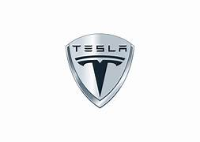

Google Maps
Google Maps is a widely-used mapping and navigation service developed by Google. Launched in 2005, it offers detailed maps, real-time traffic information, and turn-by-turn navigation. Users can explore locations, find businesses, and even view street-level imagery. Google Maps has become an essential tool for both everyday navigation and travel planning..
citation:https://www.google.com/maps/@6.930432,122.0706304,13z?entry=ttu
Tesla
Tesla, Inc., founded by Elon Musk in 2003, is a groundbreaking electric vehicle (EV) and clean energy company. Tesla's electric cars have redefined the automotive industry with their performance, range, and sustainable design. The company's mission to accelerate the world's transition to sustainable energy includes producing solar panels and energy storage solutions. Tesla has been a pioneer in the EV revolution.
citation:https://www.tesla.com/
Amazon
Amazon, founded by Jeff Bezos in 1994, is one of the world's largest e-commerce and technology companies. It started as an online bookstore and has since grown into a vast online marketplace. Amazon offers a wide range of products, from books and electronics to streaming services like Amazon Prime Video. The company's innovations include Amazon Web Services (AWS) and devices like the Kindle and Echo.
citation:https://www.amazon.com/
SpaceX
SpaceX, founded by Elon Musk in 2002, is a private aerospace manufacturer and space transportation company. It is known for its ambitious goal of reducing space transportation costs and enabling the colonization of Mars. SpaceX has achieved several milestones, including the first privately-funded spacecraft to reach orbit and the development of the Falcon and Dragon spacecraft. It has played a significant role in advancing space exploration.
citation:https://www.spacex.com/